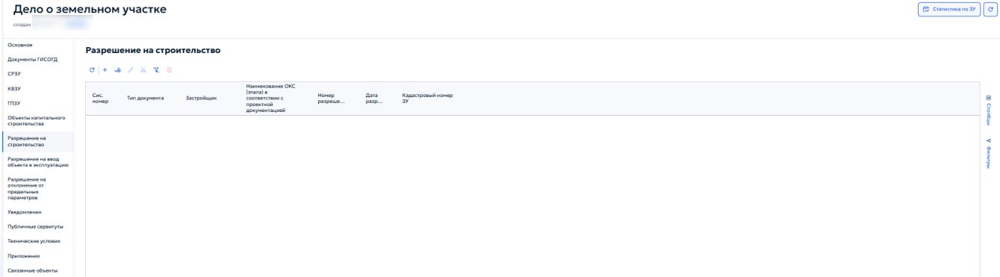
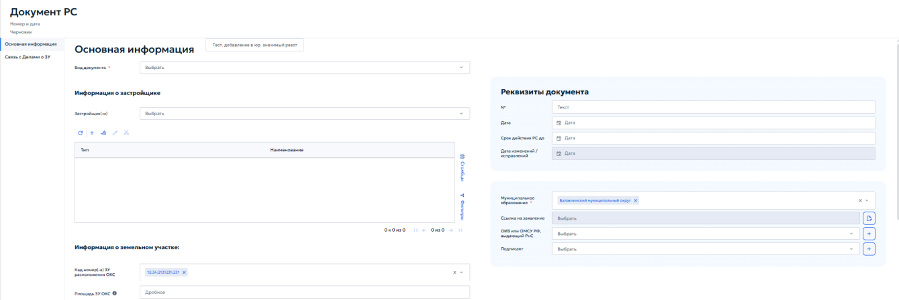
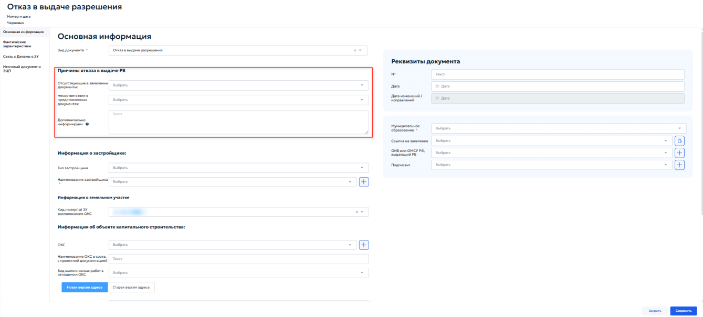
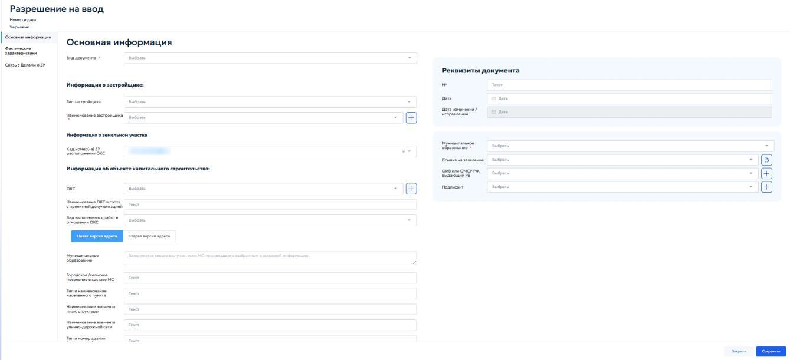
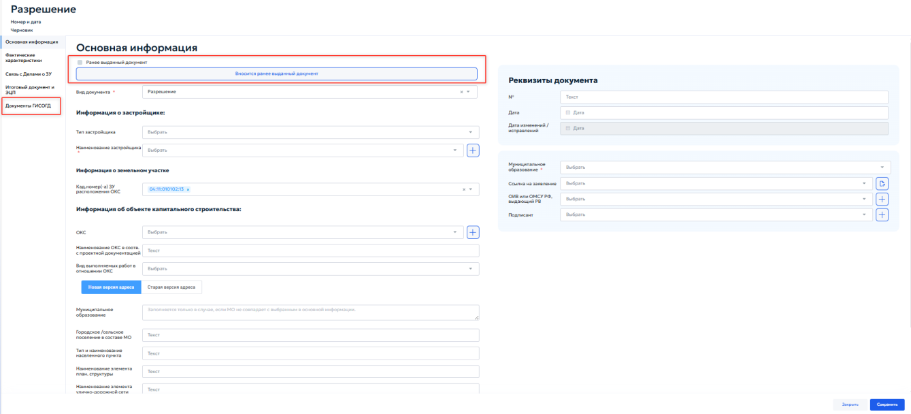
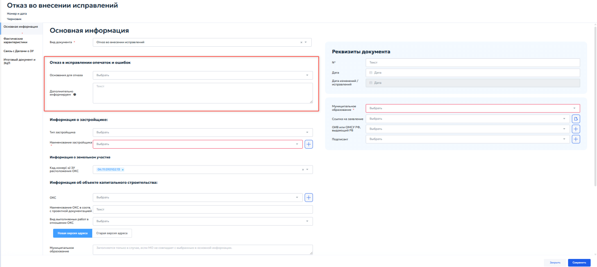
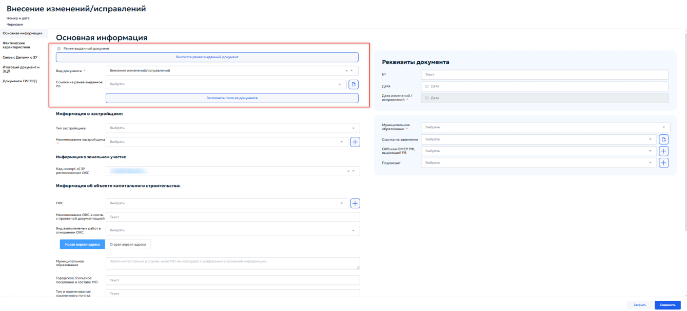
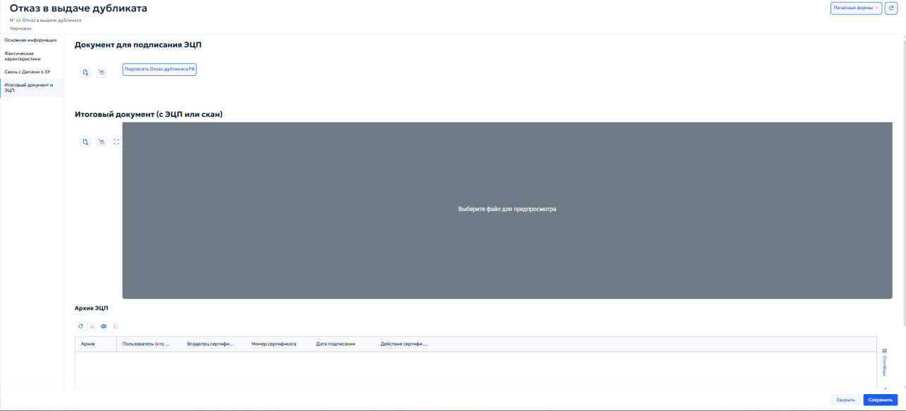

5.4.13.5 Вкладка «Разрешение на строительств
Вкладка «Разрешение на строительство» в карточке «Дело о земельном участке» предназначена для учета разрешений на строительство, выданных в отношении данного земельного участка. Разрешение на строительство оформляется в соответствии с требованиями Градостроительного кодекса РФ и является одним из ключевых документов, подтверждающих право на осуществление строительства или реконструкции объекта капитального строительства. Во вкладке отображается перечень ранее зарегистрированных разрешений (рисунок 115).

В таблице указываются: системный номер записи, тип документа, застройщик, наименование объекта капитального строительства в соответствии с проектной документацией, номер и дата выдачи разрешения, а также кадастровый номер земельного участка. При нажатии кнопки «» открывается карточка «Документ РС» (рисунок 116).

В блоке «Основная информация» в поле «Вид документа» необходимо выбрать из выпадающего списка документ, разрешающий строительство. Блок «Информация о застройщике» предназначен для выбора застройщика, которому выдано разрешение на строительство. Нажмите кнопку «Выбрать» рядом с полем «Застройщик» и выберите организацию или физическое лицо. Порядок выбора застройщика описан в пункте 5.4.13.1. Ниже отображается таблица выбранных застройщиков.
В блоке «Информация о земельном участке» указываются сведения о земельных участках, на которых планируется размещение объекта капитального строительства:
- «Кад.номер(а) ЗУ расположения ОКС» — выпадающий список, в котором указывается кадастровый номер земельного участка. Если выбрано несколько участков, рядом с основным номер отображается индикатор «+№».
-
«Площадь ЗУ ОКС» — укажите общую площадь земельного участка. Ниже расположена таблица, в которой автоматически отображаются добавленные земельные участки. Управление записями описано в разделе 4.3 настоящего Руководства. В блоке «Реквизиты документа» указываются следующие данные:
-
«№» — введите регистрационный номер разрешения на строительство;
- «Дата» — укажите дату выдачи разрешения с помощью календаря;
- «Срок действия РС до» — укажите дату окончания срока действия разрешения;
- «Дата изменения/исправления» — поле заполняется автоматически при внесении изменений в документ;
- «Муниципальное образование» — выберите из выпадающего списка муниципальное образование, на территории которого планируется строительство;
- «Ссылка на заявление» — нажмите кнопку «Выбрать», чтобы привязать заявку на выдачу разрешения, зарегистрированную в журнале поступивших
заявок. При нажатии кнопки перехода выполняется переход на прикрепленное заявление;
-
«ОИВ или ИМСУ РФ, выдающий Рнс» — нажмите кнопку «Выбрать», чтобы указать орган исполнительной власти или орган местного самоуправления, выдавший разрешение на строительство. Выбор осуществляется из справочника органов власти;
-
«Подписант» — нажмите кнопку «Выбрать», чтобы указать должностное лицо, подписавшее разрешение. Выбор осуществляется из прикрепленного справочника должностных лиц. Вкладка «Связь с делами о ЗУ» предназначена для установления и просмотра связей между разрешением на строительство и делами о земельных участках, на которых планируется возведение ОКС. Порядок работы с таблицей описан в пункте 5.2.2.
5.4.13.6 Вкладка «Разрешение на ввод объекта в эксплуатацию»¶
Вкладка «Разрешение на ввод объекта в эксплуатацию» в карточке «Дело о земельном участке» предназначена для учета разрешений на ввод объекта капитального строительства в эксплуатацию, выданных в отношении объектов, расположенных на данном земельном участке. Разрешение на ввод оформляется в соответствии с требованиями Градостроительного кодекса РФ и подтверждает завершение строительства или реконструкции объекта в полном соответствии с проектной документацией. Во вкладке отображается перечень ранее зарегистрированных разрешений на ввод. Для выбранного документа можно открыть его карточку; пример карточки для вида документа «Отказ в выдаче разрешения» приведён на рисунке 117.

В таблице указываются: системный номер записи, тип документа, застройщик, номер и дата выдачи разрешения, наименование объекта капитального строительства, а также кадастровый номер земельного участка. Панель инструментов перечня позволяет добавлять, редактировать, удалять, обновлять и экспортировать записи. Общие правила работы с табличными формами описаны в пункте 4.3. При нажатии кнопки «Добавить» открывается карточка «Разрешение на ввод» (рисунок 118).

Карточка «Разрешение на ввод объекта в эксплуатацию» содержит вкладку «Основная информация», предназначенную для создания и редактирования документа. В зависимости от значения поля «Вид документа» отображаются дополнительные блоки или поля:
- «Разрешение» — отображается кнопка «Вносится ранее выданный документ», позволяющая выбрать существующее разрешение, на основании которого создаётся новое. В карточке появляется вкладка «Документы ГИСОГД» (рисунок 119);

- «Отказ во внесении исправлений» — отображается блок «Отказ в исправлении опечаток и ошибок» (рисунок 120).

В блоке указывается следующая информация:
- «Основания для отказа» — выберите причину для отказа из выпадающего списка;
- «Дополнительно информируем» — напишите разъяснение для отказа.
-
«Отказ во внесении изменений» — отображается блок «Причины отказа во внесении изменений в РВ». В блоке указывается следующая информация:
- «Отсутствующие в заявлении документы» — выберите из списка документы, которые не были предоставлены;
- «Несоответствия в представленных документах» — выберите вид выявленных несоответствий.
-
«Отказ в выдаче разрешения» — отображается блок «Причины отказа в выдаче РВ» (рисунок 121), содержащий следующие поля:

- «Отсутствующие в заявлении документы» — выберите из справочника документы, обязательные для предоставления в соответствии с требованиями Градостроительного кодекса РФ и административного регламента;
- «Несоответствия в представленных документах» — выберите из справочника документы, включающие в себя несоответствия с предоставленными документами;
- «Дополнительно информируем» — укажите дополнительные данные, обоснования отказа или иную информацию, которую заявитель должен учесть.
-
«Отказ в выдаче дубликата» — состав вкладки «Основная информация» не изменяется. В меню карточки появляется вкладка «Итоговый документ и ЭЦП» (см. пункт 5.4.13.6.1).
- «Внесение изменений/исправлений» — отображается блок «Ранее выданный документ» (рисунок 122).

В блоке указывается следующая информация:
- «Вносится ранее выданный документ» — кнопка, работающая в соответствии с видом документа «Разрешение»;
- «Ссылка на ранее выданное РВ» — выберите из справочника ссылку на ранее выданное разрешение. При необходимости прикрепите ее
с помощью кнопки выбора ;
- «Заполнить поля из документа» — кнопка, при нажатии система переносит данные из выбранного ранее выданного разрешения в текущую карточку. В блоке «Информация о земельном участке» в выпадающем списке «Кад.номер(-а) ЗУ расположения ОКС» можно выбрать кадастровый номер земельного участка, на котором расположен объект. Если выбрано несколько участков, рядом с основными номер отображается индикатор «+№». Блок «Информация об объекте капитального строительства» включает в себя следующие поля:
- «ОКС» — выберите в справочнике объект капитального строительства;
- «Наименование ОКС в соотв. с проектной документацией» — укажите название объекта капитального строительства;
-
«Вид выполняемых работ в отношении ОКС» — выберите из выпадающего списка значение объекта; Для указания местоположения ОКС заполните адресную форму. В карточке доступны вкладки «Новая версия адреса» и «Старая версия адреса». Вкладка «Новая версия адреса» содержит следующие поля:
-
«Муниципальное образование» — укажите, если муниципальное образование не совпадает с указанным в основной информации дела о ЗУ;
- «Городское/сельское поселение в составе МО» — укажите наименование поселения, входящего в состав выбранного муниципального образования;
- «Тип и наименование населенного пункта» — укажите тип населенного пункта и его наименование;
- «Наименование элемента план. структуры» — укажите территорию — микрорайон, квартал, жилой район, промышленная территория и т. д.;
- «Наименование элемента улично-дорожной сети» — укажите элемент улично-дорожной сети: проезд, переулок и т. д.;
- «Тип и номер здания (сооружения)» — укажите тип и номер здания или сооружения. Вкладка «Старая версия адреса» содержит следующие поля:
- «Адрес (местоположение) ОКС ГАР» — для выбора адреса из Государственного адресного реестра;
- «Описание адреса» — описание местоположения, если адреса нет в ГАР. В блоке «РС, на основании которого осуществлялось строительство, реконструкция объекта капитального строительства» в реестре выберите разрешение на строительство, связанное с текущим делом о земельном участке (см. раздел 5.4.13.5). В блоке «Отметка о регистрации в ГИСОГД» в поле «Ссылка на документ ГИСОГД» выберите документ, связываемый с объектом. Блок «Реквизиты документа» содержит регистрационные сведения разрешения на ввод объекта. Порядок заполнения реквизитов документа приведен в пункте 5.3.2 настоящего Руководства.
5.4.13.6.1 Вкладка «Итоговый документ и ЭЦП»¶
Вкладка «Итоговый документ и ЭЦП» (рисунок 123) предназначена для формирования, подписания и хранения итоговой версии документа, а также для управления электронными подписями. На основании данных карточки Система формирует файл, пригодный для подписания.

5.4.13.7 Вкладка «Разрешение на отклонение от предельных параметро⻶
Находится в разработке